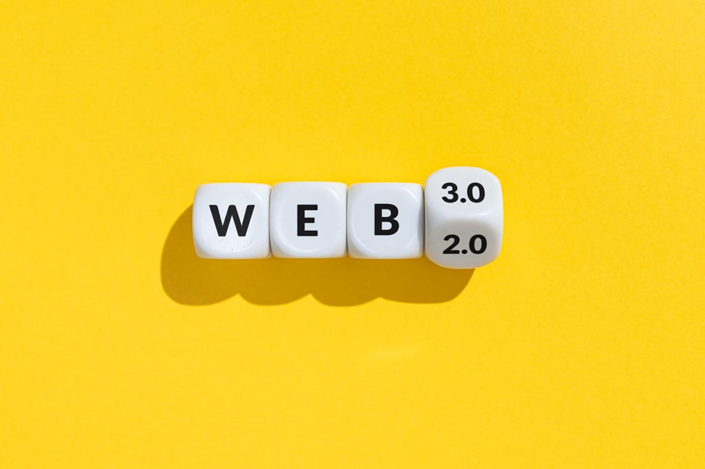

ビットコインETF承認が暗号通貨市場に与える革命的インパクト
2025年、複数のビットコインETFが相次いで承認されたことで、機関投資家の参入が本格化しています。この動きが暗号通貨市場全体に与える影響を詳細に分析し、今後の投資戦略について考察します。
ブロックチェーン技術、DeFi、NFT、メタバースまで
最新トレンドを深堀りし、投資の洞察を提供します
2025年、複数のビットコインETFが相次いで承認されたことで、機関投資家の参入が本格化しています。この動きが暗号通貨市場全体に与える影響を詳細に分析し、今後の投資戦略について考察します。

流動性マイニングからリアルイールドまで、DeFiプロトコルは急速に進化しています。最新のDeFi 2.0プロジェクトの特徴と投資機会を解説。

OpenSea、Blur、Magic Edenなど、主要なNFTマーケットプレイスの手数料、機能、ユーザー体験を詳細に比較分析します。
データドリブンなアプローチで暗号通貨市場を解析
2022年から暗号通貨とブロックチェーン技術の分析を続けるクリプトアナリスト。 金融工学の知識とプログラミングスキルを活かし、データドリブンな市場分析を提供。
「暗号通貨投資において最も重要なのは、テクノロジーの本質を理解し、 長期的な価値創造の可能性を見極めることです。 短期的なボラティリティに惑わされず、ファンダメンタルズに基づいた 冷静な判断を心がけています。」